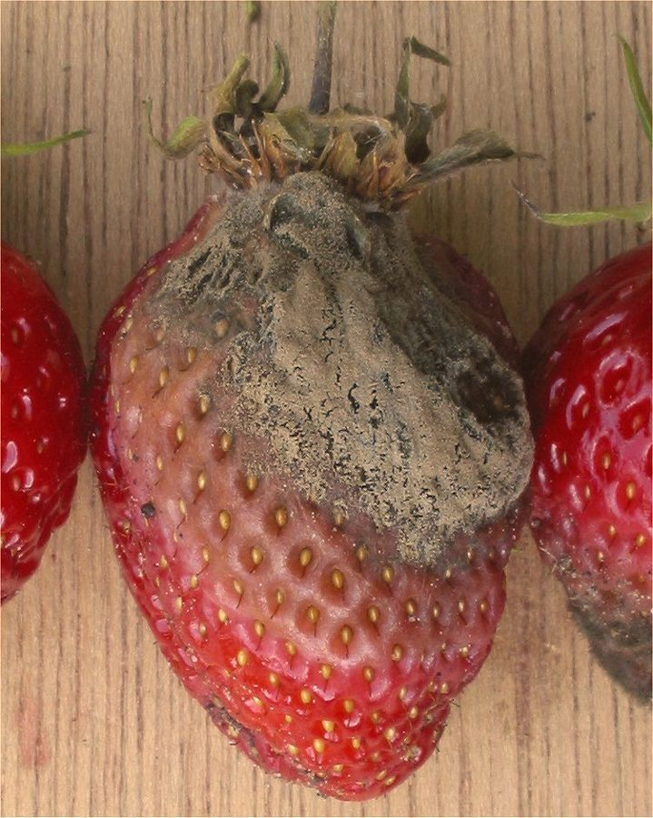

ग्रे मोल्डGrey Mould
Botrytis cinerea · Sclerotiniaceae · FNG-0047

- Scientific name वैज्ञानिक नाम
- Botrytis cinerea Pers.
- Family कुल
- Sclerotiniaceae
- Hindi हिंदी
- ग्रे मोल्ड
- Local names स्थानीय नाम
- grey mould, gray mold, sleti phaphoond, dhusar fafund
- Status here यहाँ की स्थिति
- native
- Movement आवागमन
- Resident, here all year
- Known from कहाँ दर्ज
- Others have published records from the wider Awadh–Purvanchal plain, none yet from Basti–Ayodhya अवध–पूर्वांचल से दूसरों के प्रकाशित अभिलेख, बस्ती–अयोध्या से अभी नहीं
- IUCN IUCN
- not evaluated
- Review समीक्षा
- not yet reviewed
When to look कब देखें
Expected mainly in January, February, March, November, December. मुख्यतः जनवरी, फ़रवरी, मार्च, नवंबर, दिसंबर में अपेक्षित।
Tell it apart from इनसे अलग पहचानें
ग्रे मोल्ड / Grey Mould
Botrytis cinerea Pers. — Sclerotiniaceae
ग्रे मोल्ड — दलहनी फसलों, सब्जियों और फलों के कोमल अंगों पर राख जैसी धूसर मखमली परत जमाने वाला एक सर्वव्यापी कवक। सर्दियों में घने कोहरे, ओस और नम मौसम के दौरान यह कवक तेजी से फैलता है। चने के फूलों, टमाटर के फलों और गोभी के तनों पर यह कवक पहले पानी जैसे नरम धब्बे बनाता है, जो जल्द ही राख जैसे पाउडर से ढक जाते हैं। इसके बीजाणु अंगूर के गुच्छों जैसे दिखाई देते हैं। यह कवक कटाई के बाद फलों और सब्जियों को सड़ाने का एक प्रमुख कारण है।
Quick Identification त्वरित पहचान
| Feature | Description |
|---|---|
| Colony appearance | Dense, powdery, smoky grey to ash-brown velvety mould layer |
| Affected organs | Flowers, tender pods, succulent stems, and ripening soft fruits |
| Initial symptom | Water-soaked soft circular lesions on succulent host tissues |
| Conidial mass | Massive production of grey-brown airborne spore dust on lesion surface |
| Spore grouping | Conidia arranged in dense grape-like clusters on branched upright stalks |
| Conidial shape | Obovoid to broadly ellipsoidal, pale brownish, single-celled |
| Survival stage | Small, irregular, flattened black sclerotia adhering to dead host tissue |
| Rot characteristic | Soft, watery disintegration of tissue followed by dry, grey crumbling |
Field tip: Check chickpea crops during foggy January mornings. Dense grey-brown powdery fuzz smothering flowers, tender pods, and lower canopy stems indicates grey mould (Botrytis blight); touching the plant releases a cloud of dusty grey spores.
हिंदी — कैसे पहचानें: चने की फसल में फूलों और कोमल फलियों पर राख जैसे सलेटी रंग की रोएँदार परत। हाथ लगाने पर राख जैसी धूल उड़ती है और प्रभावित भाग गलकर सड़ जाता है।
Morphology आकारिकी
Botrytis cinerea produces distinctive tree-like conidiophores and grape-like conidial clusters characteristic of the family Sclerotiniaceae:
- Conidiophores: Arising directly from vegetative mycelium or surface sclerotia; tall, stout, erect, septate, dark brown near the base and lightening toward the apex, branching alternately or irregularly near the summit; each branch terminates in a rounded ampulla.
- Conidia: Borne synchronously on fine denticles over the swollen ampullae in compact grape-like clusters; individual conidia are single-celled, obovoid to broadly ellipsoidal, hyaline to pale smoky brown, smooth-walled, with a tiny basal apiculum.
- Mycelium: Septate, branched, hyaline when young, turning pale olivaceous-brown with age, secreting massive amounts of cell-wall dissolving enzymes (polygalacturonases and laccases) that cause rapid tissue maceration.
- Sclerotia: Formed readily on senescent plant surfaces; irregular, flattened to convex, hard, dark brown to jet black, composed of a dense melanized rind enclosing a pseudoparenchymatous hyaline core.
- Teleomorph: The sexual state (Botryotinia fuckeliana) develops cup-shaped apothecia on stalked sclerotia, though it is rarely observed in regional cropping fields compared to the anamorphic state.
हिंदी: सूक्ष्मदर्शी में इसके डंठल पेड़ की डालियों जैसे और उन पर बीजाणु अंगूर के गुच्छों जैसे लटके दिखते हैं। पुराने डंठलों पर काली और सख्त गांठें बनती हैं जो कवक को प्रतिकूल मौसम में जीवित रखती हैं।
Ecology and Substrate पारिस्थितिकी और आधार
Botrytis cinerea possesses an exceptionally broad host range spanning over two hundred dicotyledonous and monocotyledonous plant species:
- Susceptible crops: Causes destructive blights on chickpea (Cicer arietinum), tomato (Solanum lycopersicum), brinjal, cabbage, grapevines, and soft fruit crops.
- Infection biology: Enters via senescing flower petals, mechanical wounds, insect feeding punctures, or direct penetration through the cuticle via specialized appressoria.
- Microclimatic needs: Thrives under cool temperatures and very high relative humidity; requires free water or prolonged dew films on plant surfaces for spore germination.
- Post-harvest role: Continues parasitic digestion in cold storage and transit, causing grey mould soft rot on packed vegetables and perishable fruits.
हिंदी: यह कवक चना, टमाटर, बैंगन और गोभी जैसी दर्जनों फसलों के कोमल भागों पर हमला करता है। ठंडे मौसम और कोहरे में यह बहुत तेजी से पनपता है। गोदामों में रखी सब्जियों और फलों को भी यह सड़ा देता है।
Life Cycle / Phenology जीवन चक्र
The fungus is active during the cool rabi season, surviving warmer months through resistant sclerotial structures:
| Season / Period | Biological Stage | Agricultural Manifestation |
|---|---|---|
| Early Winter | Conidia germinate on damp fallen petals or lower senescent leaves | Primary infection initiates in dense vegetable canopies |
| Mid-Winter | Dense fog and dew trigger explosive conidiophore emergence and conidial release | Peak Botrytis blight epidemic in chickpea and tomato fields |
| Late Winter | Sclerotia differentiate on collapsed stems, dry pods, and rotting fruits | Fungal colony prepares durable survival resting bodies |
| Spring / Harvest | Sclerotia and melanized mycelium enter soil alongside dry harvest residues | High temperatures arrest vegetative mycelial growth |
| Summer / Monsoon | Sclerotia remain dormant in upper soil layers, resisting heat and seasonal floods | Quiescent summer survival awaiting cool winter conditions |
हिंदी: सर्दियों की शुरुआत में यह कवक पुरानी पत्तियों पर उगता है। पूस-माघ के कोहरे में यह चने के फूलों और फलियों पर भयानक रूप से फैलता है। गर्मियों में यह काली गांठों के रूप में मिट्टी में सुप्त रहता है।
Associated Species and Decay Role सहजीवी प्रजातियाँ और अपघटन
Botrytis cinerea interacts with multiple winter rabi crops across the Gangetic plain:
- Host species: Documented on Chickpea and Tomato.
- Fungal associations: Often follows early infections of Ascochyta blight or powdery mildew, exploiting compromised host tissue to rapidly rot the plant.
- Saprophytic decay: Serves as a primary decomposer of succulent, high-moisture agricultural debris, rapidly liquefying parenchymal cells.
- Ecological niche: Functions as a pioneer colonizer of dying floral parts, facilitating the rapid recycling of floral nutrients into the agrarian detritus cycle.
हिंदी: यह कवक चने और टमाटर की फसलों में आसानी से फैलता है। कीटों या अन्य रोगों से कमजोर हुए पौधों पर इसका हमला जल्दी होता है। गिरे हुए फूलों और सड़ी पत्तियों को गलाकर यह मिट्टी की संरचना सुधारता है।
Agricultural / Human Relevance कृषि प्रासंगिकता
Botrytis grey mould is a premier phytopathological constraint on winter pulses and horticultural produce:
- Fungal sign: Heavy, velvety ash-grey to smoky-brown sporulating mats covering infected floral clusters, pods, and succulent stems.
- Crop symptom: Sudden blossom blight, premature flower drop, pod rotting, and stem girdling that causes entire chickpea branches to dry and collapse; post-harvest fruit liquefaction.
- Cultural management:
- Adopt wider row spacing and optimal plant density to enhance ventilation and rapid canopy drying.
- Avoid excessive vegetative growth caused by over-irrigation and surplus nitrogen application.
- Intercrop chickpea with taller erect cereals (such as wheat or barley) to reduce humidity within the pulse canopy.
- Rogue out and destroy early infected plants showing blossom blight to suppress local conidial buildup.
- Handle harvested fruits and vegetables gently to prevent surface skin abrasions that facilitate rot.
हिंदी: चने के फूलों पर राख जैसी फफूंद लगने से फूल झड़ जाते हैं और फलियाँ नहीं बन पातीं। कतारों के बीच उचित दूरी रखना, ज्यादा सिंचाई न करना और चने के साथ सरसों या जौ की मिली-जुली खेती करना इसके असर को कम करता है।
Expected Locally स्थानीय रूप से अपेक्षित
Not a field record. Written from published accounts for eastern Uttar Pradesh. No confirmed local sighting yet — if you have seen it, that is what the atlas needs.
अभी तक स्थानीय पुष्टि नहीं। यह विवरण प्रकाशित स्रोतों से है, किसी अवलोकन से नहीं।
GBIF holds published records from the wider Awadh–Purvanchal plain, none yet from Basti–Ayodhya. In Awadh, the fungus is expected in pulse-growing tracts, vegetable market gardens, peri-urban polyhouses, and fruit storage facilities during the winter months. A confirmed first record requires a clear photograph with place and date submitted through the project portal.
हिंदी: सर्दियों के महीनों में बस्ती के चने के खेतों और सब्जी की बाड़ियों में यह कवक आसानी से देखा जा सकता है। पुष्टि के लिए सलेटी फफूंद से ढके फूलों की तारीख सहित तस्वीर भेजें।
Distribution वितरण
Global range: Cosmopolitan across temperate and subtropical agricultural regions globally.
In India: Recorded across northern agricultural plains, particularly during the cool winter rabi season (Bilgrami et al. 1979).
In Uttar Pradesh: Documented from pulse-growing tracts and vegetable gardens throughout the Gangetic plain.
In Basti district / eastern UP: Expected in chickpea fields, tomato plots, and fruit storage facilities during damp winter months.
हिंदी: यह कवक दुनिया भर के ठंडे और शीतोष्ण इलाकों में पाया जाता है। उत्तर प्रदेश में रबी के मौसम में चने और टमाटर की खेती वाले सभी क्षेत्रों में यह मौजूद रहता है।
Research Questions शोध प्रश्न
- How does canopy density in mixed chickpea-mustard cropping influence the microclimatic threshold for Botrytis sporulation in Awadh?
- What is the survival longevity of Botrytis cinerea sclerotia buried under flooded paddy rotations during the kharif season? / क्या मानसूनी धान की बाढ़ के दौरान मिट्टी में दबी स्केलेरोशिया नष्ट हो जाती हैं?
- Can natural biological antagonists on tomato leaf phylloplanes effectively suppress spore germination during foggy winter mornings?
- Which petal-dwelling bacteria inhibit conidial germ-tube elongation during early winter flowering? / चने के फूलों पर रहने वाले कौन से जीवाणु कवक के संक्रमण को रोक सकते हैं?
- Does night-time relative humidity exceeding ninety-five percent correlate directly with sudden blossom blight outbreaks?
Similar Species मिलती-जुलती प्रजातियाँ
| Species | Primary Host | Conidiophore Branching | Sclerotium Shape |
|---|---|---|---|
| Botrytis cinerea | Broad range (pulses, tomato) | Tree-like with grape-like conidia | Flat, irregular, black crusts |
| Sclerotinia sclerotiorum | Mustard, legumes | No aerial conidiophores formed | Large, hard, mouse-dropping like |
| Rhizoctonia solani | Diverse crops | Aseptate moniloid cells, no conidia | Irregular brown surface sclerotia |
Field rule: Check conidiophores and spore clusters: tall dark conidiophores bearing grape-like clusters of grey spores indicate Botrytis cinerea, distinguishing it from Sclerotinia which produces only mycelial sheets and large sclerotia.
हिंदी: पेड़ जैसी डालियों पर अंगूर के गुच्छों जैसे लगे सलेटी बीजाणु इस कवक की खास पहचान हैं। सफेद तना सड़न वाले कवक में हवा में उड़ने वाले बीजाणु नहीं बनते, बल्कि केवल सफेद जाला और बड़ी काली गोलियां बनती हैं।
Taxonomy & Classification वर्गीकरण
Original description. Described by Christiaan Hendrik Persoon in 1794 and validated in his Synopsis Methodica Fungorum in 1801 (2, p. 690).
Subspecies. Monotypic — no subspecies are currently recognised.
Family and order placement. Belongs to the family Sclerotiniaceae within the order Helotiales, class Leotiomycetes, phylum Ascomycota.
Phylogenetic notes. Molecular phylogenetics confirms Botrytis cinerea as a complex of cryptic species within the Sclerotiniaceae, closely related to Botryotinia.
IUCN status rationale. Not evaluated globally by the IUCN Red List. It is an extremely common, globally distributed necrotrophic microfungus facing no conservation hazards.
हिंदी: इसका वैज्ञानिक विवरण 1801 में पर्सून द्वारा दिया गया था। यह एस्कोमाइकोटा प्रभाग का सदस्य है और पूरी दुनिया में बहुत आम है।
Photo Gallery फोटो गैलरी
No photos yet — add field photos to media/species/grey_mould/ and run node scripts/sync_photos.js.
Photos needed आवश्यक फोटो
- [ ] Ash-grey velvety mould covering chickpea flowers and immature pods (चने के फूलों पर सलेटी फफूंद)
- [ ] Soft rot on tomato fruit with dense conidial fuzz (टमाटर के फल पर धूसर सड़न)
- [ ] Black flattened sclerotia formed on dead crop stems (तने पर चिपकी काली स्केलेरोशिया)
References संदर्भ
- Persoon, C. H. (1801). Synopsis Methodica Fungorum, 2, p. 690.
- Bilgrami, K. S., Jamaluddin & Rizwi, M. A. (1979). The Fungi of India, Part I. Today & Tomorrow's Printers & Publishers, New Delhi.
- GBIF Occurrence Data — Botrytis cinerea, India (2025).
Source file: species/fungi/molds/grey_mould.md